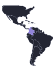

Colombia is the only country in South America with coastlines on both the Pacific and the Caribbean. Combined with the Andes running through its centre and the Amazon to the south, this geography has shaped an unusually wide range of musical traditions, from Indigenous music of the Amazon and the Andes to Antillean styles like calypso and reggae. The country's music divides broadly into six regions, each carrying the imprint of its landscape and history. This page collects examples from each, plotted roughly where they originated. Select a point on the map to hear it and read more.
Colombia is sometimes called the Land of a Thousand Rhythms: over 1,025 folkloric rhythms have been documented, shaped by a geography of mountains, rainforest, plains and coasts that kept regions musically distinct from one another, and by different a mix of Indigenous, African and European influences (I lean towards recognising the depth of Afro-Colombian influence in particular). This page only scratches the surface of that.
I'm Juan David Leongómez. I have a background in music, but I'm not a musicologist or an expert in Colombian traditional music; treat this as a personal, incomplete set of examples, not a survey. I tend to prefer videos of live performances, and I lean towards older and more traditional music over very modern styles: you won't find Shakira, Karol G or reggaetón here, even though reggaetón dominates popular Colombian music today. The goal isn't to be comprehensive, just to point at some of the variety.
Each example is also tagged traditional, fusion or non-traditional (shown on the map as a circle, triangle or square):
If you think something's wrong, missing, or could be better, corrections and additions are welcome. Click here.
On the map: circles are traditional, triangles are fusion, squares are non-traditional.

ColombiaPlaying through the examples currently shown, in order — it loops back to the start when it reaches the end.